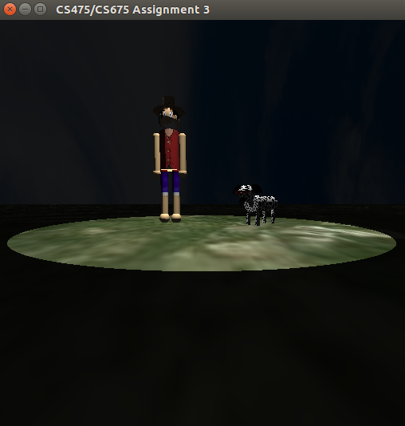

Toys - Modelling and Rendering
Images of the Toys:
Humanoid:
Hierarchy
Luffy
Non-Humanoid:
Hierarchy
Dog
Scene:
Without Lights
With 1 light
With 2 lights

With Spotlight
With all lights
Features and Instructions:
Run the Makefile using make command, to get the executable "Assignment3".
Using the command ./Assignment3 a window appears where we can see a Humanoid and Non-Humanoid toys in an environment.
There are 2 directional lights and 1 spot-light in the environment.
Initially the models are rendered in perspective view.
KeyBoard Instructions:
"P" - Changes Perspective view.
The keys "D, A, S, W, E, Q" allow rotations along the positive and negative Y, X and Z axis respectively of the camera.
The key "R" helps to nullify all the applied rotations to the camera (for convenience).
"H" - Changes the selected model for applying transformations from Humanoid to Non-Humanoid or vice-versa. Initially the selected model is Humanoid.
"+/-" - For zoom in/zoom out.
"B" - Turns on/off directional light 1.
"N" - Turns on/off directional light 2.
"M" - Turns on/off spot-light.
-
Keys specific to Humanoid
"0" - selects body
"1" - selects neck
"2" - selects right hand
"3" - selects right elbow
"4" - selects left hand
"5" - selects left elbow
"6" - selects right leg
"7" - selects right knee
"8" - selects left leg
"9" - selects left knee
-
Keys specific to Non-Humanoid
"0" - selects body
"1" - selects neck
"2" - selects right front leg
"4" - selects left front leg
"6" - selects right back leg
"8" - selects left back leg
The "left/right arrows" allows the selected specific part of the model to rotate about the Y-axis, the "up/down arrows" allows rotation about the X-axis, and "PgUp/PgDn" allows rotation about the Z-axis.
The keys "I, K, L, J, O, U" allows translations along the positive and negative Y, X and Z axis respectively of the selected toy.